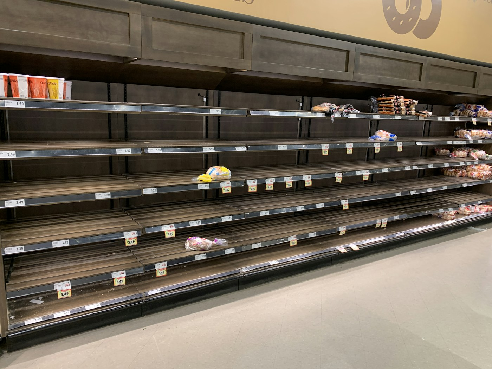

Sua prateleira está perdendo dinheiro.
3 sinais para conferir hoje
Arraste para o lado →
1
Você só descobre o vencido quando ele já venceu.
Controlar por lote e validade deixa a perda visível antes de acontecer.
2 / 6

2
Falta o que mais vende e sobra o que ninguém procura.
Comprar sem olhar o giro deixa dinheiro parado na prateleira.
3 / 6
3
O sistema diz uma coisa e a prateleira diz outra.
Divergência sem explicação costuma ser perda que ninguém registrou.
4 / 6

Estoque por produto, lote e validade
Menos perdas, rupturas e excesso de mercadoria.
5 / 6

Quer ver isso na sua farmácia?
+600clientes
+16anos de experiência
prosystemnet.com.br